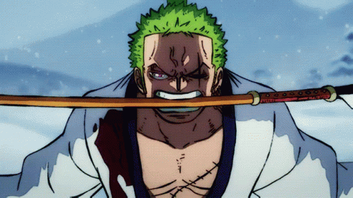
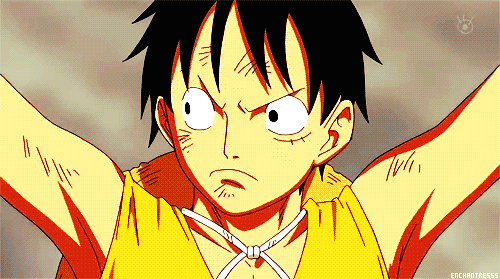

RORONOA ZORO
VIDA: 100
Daño en el ataque: 10 / 20 (Según ataque 1 o ataque 2)
Nuestro protagonista, aspirante a ser el mejor espadachín del mundo.
Primer comandante de los
sombrero de paja, característico por su estilo 3 espadas "SANTORYU".
RECOMPENSA : 1.111.000.000฿

MARSHALL D. TEACH
VIDA: 140
Daño en el ataque: 30
Enemigo por naturaleza de nuestro capitán Monkey D. Luffy, archienemigo de la historia.
Característico por la capacidad de portar más de 1 fruta del diablo y nuevo Yonkou.
RECOMPENSA :
3.996.000.000฿

ESPADACHÍN MARINE
VIDA: 30
Daño en el ataque: 20
Soldados de la marina, enemigo de los piratas. Portadores de espada.

BUCANERO MARINE
VIDA: 20
Daño en el ataque: 15
Soldados de la marina, enemigo de los piratas. Portadores de rifles.